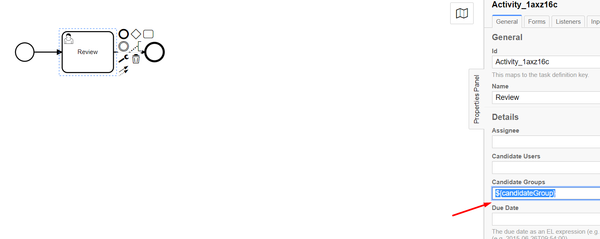
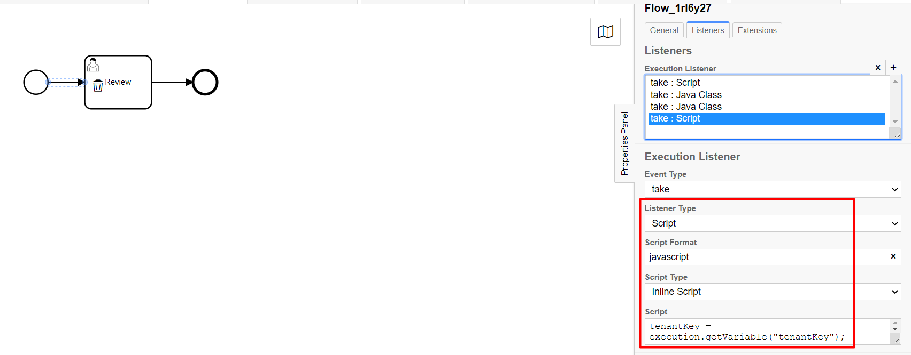

<article class="docs-article">
    <section class="docs-section" id="taskvariables">
        <div>
            <h1 id="camunda-bpm-tenant-based-task-assignment">Camunda BPM: Tenant-based task
                assignment</h1>
            <hr>
            <p>In a tenant-based environment, the user task is assigned to the tenant&#39;s
                reviewer/approver group. An example process is provided below that demonstrates how
                a user task is assigned using a process variable.</p>
            <h3 id="example-process">Example process</h3>
            <p>The candidateGroups attribute in the user task is associated to a process variable
                using {$candidateGroup}. This allows us to let the task assignment depend on the
                output of variable &quot;candidateGroup&quot;.</p>
            <p></p><br>
            <p>Inline script is added to the sequence flow before the user task to determine
                candidate group.</p>
            <p>
            </p><br>
            <p>The script uses the process variable &quot;tenantKey&quot; to determine the candidate
                group.</p>
            <pre><code >        tenantKey = execution.getVariable(<span class="hljs-string">"tenantKey"</span>);
<span class="hljs-keyword">if</span> (tenantKey){        
<span class="hljs-attr">candidateGroup</span> = tenantKey + <span class="hljs-string">"-formsflow-reviewer"</span>;
}
<span class="hljs-keyword">else</span>{
<span class="hljs-attr">candidateGroup</span> = <span class="hljs-string">"formsflow/formsflow-reviewer"</span>;
}
execution.setVariable(<span class="hljs-string">"candidateGroup"</span>, candidateGroup);
</code></pre>
        </div>